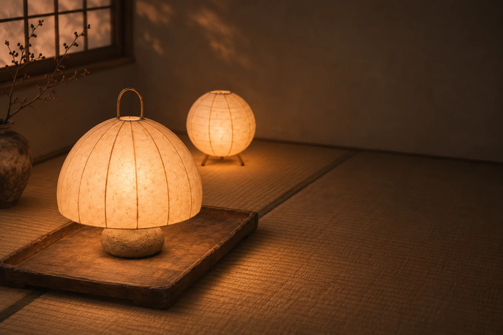
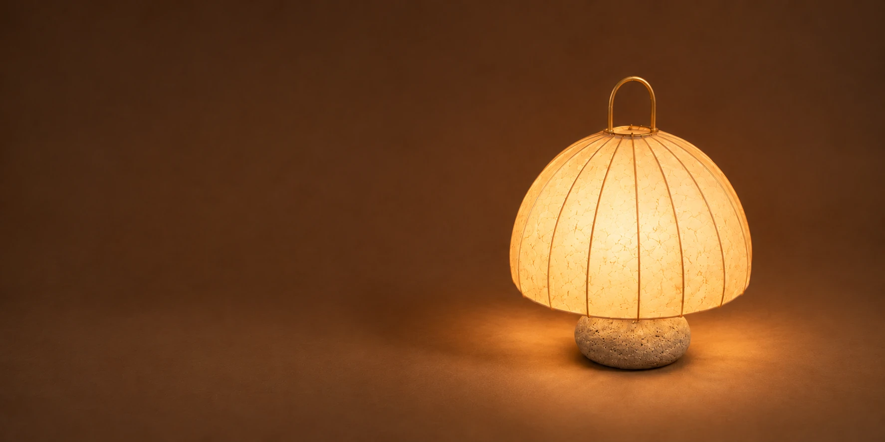

스토리
빛을 데우는 종이
닥나무 껍질로 뜬 한지는 빛을 그대로 내보내지 않는다. 섬유 사이로 한 번 걸러, 낮고 따뜻하게 퍼뜨린다. 우리는 대나무 살을 하나씩 휘어 틀을 짜고, 그 위에 한지를 손으로 붙인다. 고르지 않은 결은 고치지 않고 그대로 둔다.
만드는 이야기 읽기

스토리
닥나무 껍질로 뜬 한지는 빛을 그대로 내보내지 않는다. 섬유 사이로 한 번 걸러, 낮고 따뜻하게 퍼뜨린다. 우리는 대나무 살을 하나씩 휘어 틀을 짜고, 그 위에 한지를 손으로 붙인다. 고르지 않은 결은 고치지 않고 그대로 둔다.
만드는 이야기 읽기